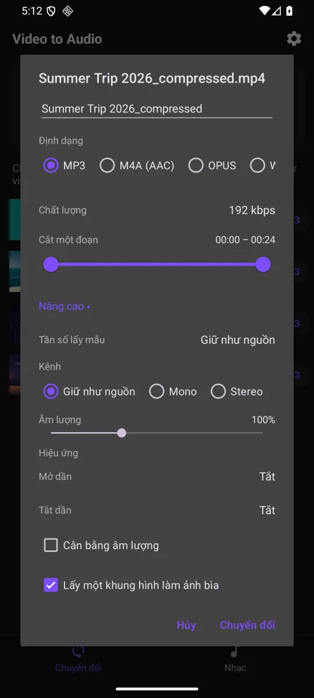

Extract MP3 from video with cover art and song tags
An MP3 pulled out of a video has always arrived empty: open your music player and all you get is a grey square and an unwieldy file name. Since version 1.6.0, Video to MP3 fixes exactly that. The app takes a frame from the video and embeds it as cover art, can look up the title and artist online, and can extract the original audio without encoding it a second time.

1. Cover art taken from a video frame
Tick Use a video frame as cover art and the app grabs a frame from the middle of the video and writes it into the cover-art tag of the MP3 or M4A.
The image lives inside the audio file itself, so copying the file to another device or opening it in a different player keeps the artwork. There is no loose .jpg alongside it for you to keep track of.
The middle frame is free. With Premium you can tap Pick the frame and choose the exact moment instead. For a music video or a live recording, the captured frame is usually a shot of the stage — enough to recognise the track in a playlist.
2. Title, artist and album art from an online lookup
After converting, long-press the MP3 in the Music tab and choose Edit info. You can type the title, artist and album yourself for free. When the video is a commercially released song, Find info online (Premium) saves the typing: enter the song or artist name, pick a match, and the app fills in the title, artist and album along with 600×600 album art. Tap Save to write it into the MP3.
The lookup only runs when you tap Search, and it sends only the words you typed — never your audio or your file names. Tag editing works on MP3 files.
Which cover wins: embed the video frame while extracting, then try the lookup. If it finds the track, the official album art replaces the frame and will be sharper than a still pulled from compressed video. If it finds nothing, the frame stays.

3. Copy the original audio, pick the track
A video already contains an audio stream that has been compressed once. Converting it to MP3 means compressing it again, and what the second pass discards is gone for good.
Extract the original audio without re-encoding (Premium) copies that stream straight into a file instead. The result is bit-identical to what was in the video, and it finishes far quicker because the phone has nothing to compute.
If the video carries more than one audio track — a dual-language film, say — you can also choose which track to extract instead of always taking the first (Premium, under Audio track).
4. Fades, volume levelling, speed and pitch
| Fade in / fade out | 1, 2, 3 or 5 seconds, so a clip cut from the middle of a song no longer starts abruptly or stops dead |
|---|---|
| Normalize loudness | Brings files to a comparable loudness, so you stop reaching for the volume keys |
| Speed | Replay a lecture or podcast faster without the voice turning into a chipmunk |
| Pitch | Raise or lower the key of a song while keeping its original length |
| Channels and sample rate | Keep the source settings, or force mono or stereo as needed |
Channels, sample rate and volume are free. On the free plan each effect in the Effects section — fades, normalize, reduce noise, speed, pitch — costs 1 credit per output file; Premium includes them.

5. A background queue that survives a locked screen
Long-press to select several videos and the app queues them and converts them in turn inside a background service. You can lock the screen or switch to another app and the job keeps running, with progress in the notification shade.
The free plan converts 3 files per batch, charges 1 credit for each extra file and runs one background job per session; Premium lifts both limits. Premium can also save the options you use most as a named preset. Out of credits? A rewarded ad earns 1 credit, up to 5 a day.
Extract audio from a video in 5 steps
- On the Convert tab, tap the MP3 button next to a video. The Extract audio screen opens.
- Under Trim, drag the two handles if you only want a section, then tap Play the selected part to check it.
- Set the Output name, choose MP3 or M4A under Format, and a Bitrate — 192 kbps is free and usually plenty.
- In the Video section, tick Use a video frame as cover art. Under Effects, add a fade or Normalize loudness if you want them.
- Tap Start. The file lands in
Music/Video to Audio, where every other player can see it.
Frequently asked questions
Does converting need an internet connection?
No. Extracting and converting audio run on the device, so your videos are not uploaded. The app does go online for ads, purchases, analytics and crash reports, and for Find info online when you use it.
Is the cover art inside the file or a separate image?
Inside the audio file, in its cover-art tag. Copy the file to another device and the artwork travels with it — there is no loose image to manage.
How is copying the original audio different from choosing 320 kbps?
Choosing 320 kbps still re-encodes what was already compressed inside the video. Copying the stream takes the existing audio as-is, with no second encode, so nothing further is lost and it finishes much faster.
Can it handle videos that are hours long?
Yes. The app sets no length or size cap; you only need free storage for the output, about 86 MB per hour of MP3 at 192 kbps. With Run in background ticked, you do not have to keep the screen on.
Where are the extracted files saved?
In Music/Video to Audio, part of your device's Music library, so every music app picks them up. The Music tab inside the app also has its own player with a queue and a sleep timer.
Get Video to MP3
Free on Google Play for Android 8.0 and newer.
Get it on Google Play See the features